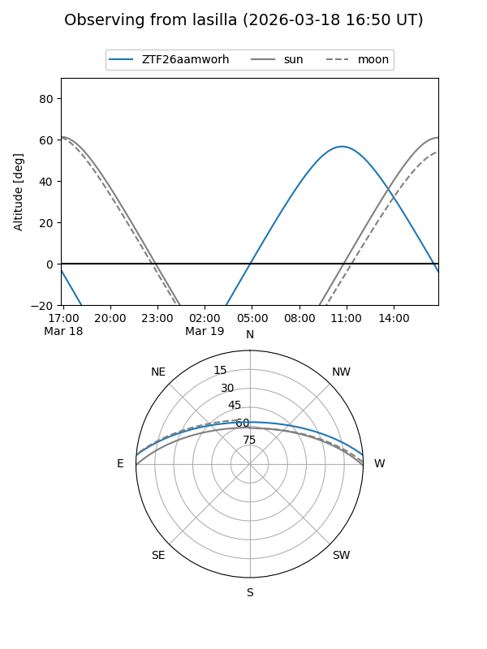
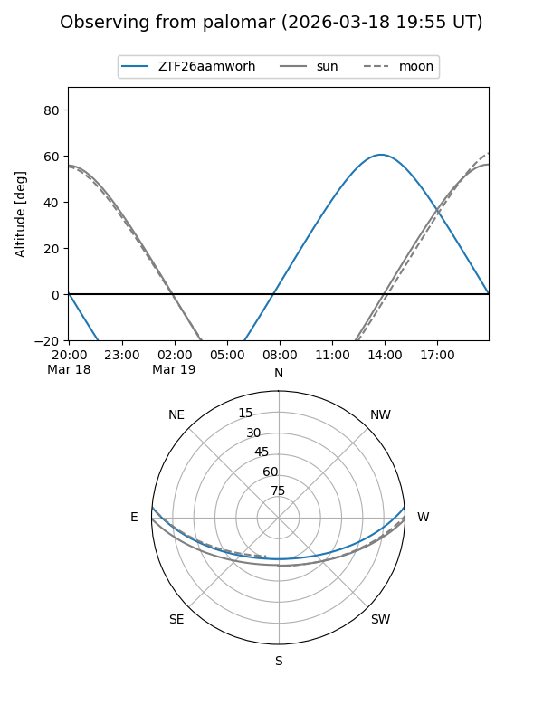

ZTF26aamworh
Target ZTF26aamworh at 2026-03-18 15:49
Aliases and brokers:
FINK: link
Lasair: link
ALeRCE: link
alt names
ZTF26aamworh (ztf,fink_ztf)
Coordinates:
equatorial (ra, dec) = 266.7679,+3.95981
equatorial (HMS+DMS) = 17:47:04.30,+03:57:35.30
galactic (l, b) = (29.0748,+16.11585)
Flags:
Photometry:
last ztfg=20.12
1 ztfg detections
Lightcurve
Visibility


Additional plots